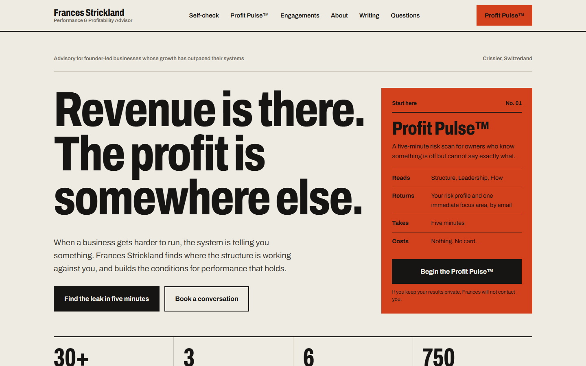
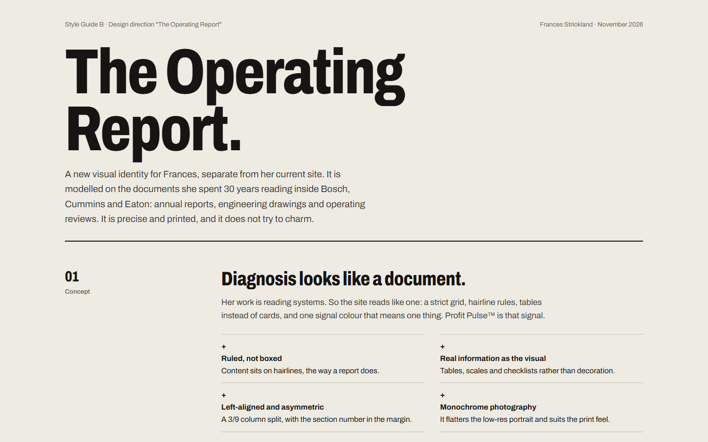
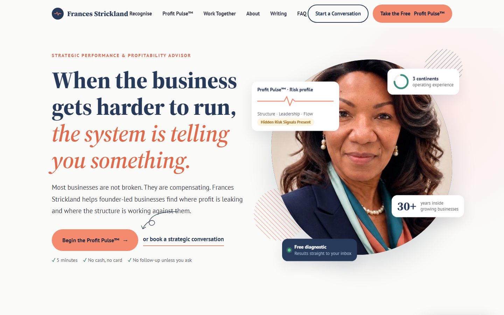

Two homepage directions for francesstrickland.com. Each one puts the free five-minute Profit Pulse™ at the start of every path, from first visit to ongoing engagement.

RecommendedA fresh start. Archivo type, paper and ink with one vermilion signal, a tickable self-check, the Profit Pulse™ shown as a spec sheet, and a ruled engagements table.

The rules behind Design B: concept, palette, typography, grid, buttons, the Profit Pulse™ treatment, photography, and the template patterns we deliberately avoid.

Her current navy and peach brand, made wider and more editorial. Floating Profit Pulse™ cards around her portrait, a sample risk profile, and a 4-step offer ladder.
| Issue | Today | In the redesign |
|---|---|---|
| Profit Pulse™ is buried | One of six competing offer cards | The primary action, in 6 to 8 places on the page |
| The brand is split | Five domains, four of them *.netlify.app microsites | One domain, francesstrickland.com |
| The scan is a Google Form | Off-brand, and results data sits apart | Built into her site, with results sent to her inbox and CRM |
| Broken links | 3 of 4 essay links open the Substack homepage | Each essay links directly |
| Reads like a document | One 720px text column and a single 480px photo | A full layout, real proof up front, and a new photo brief |
Choose a direction. After that come the inner pages, the Profit Pulse™ built into the site, and a photo shoot.
.jpg){kind=link}